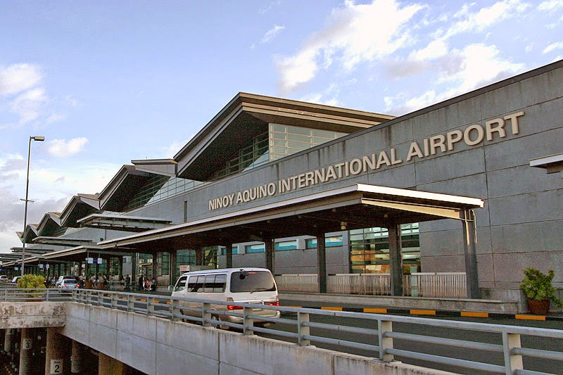
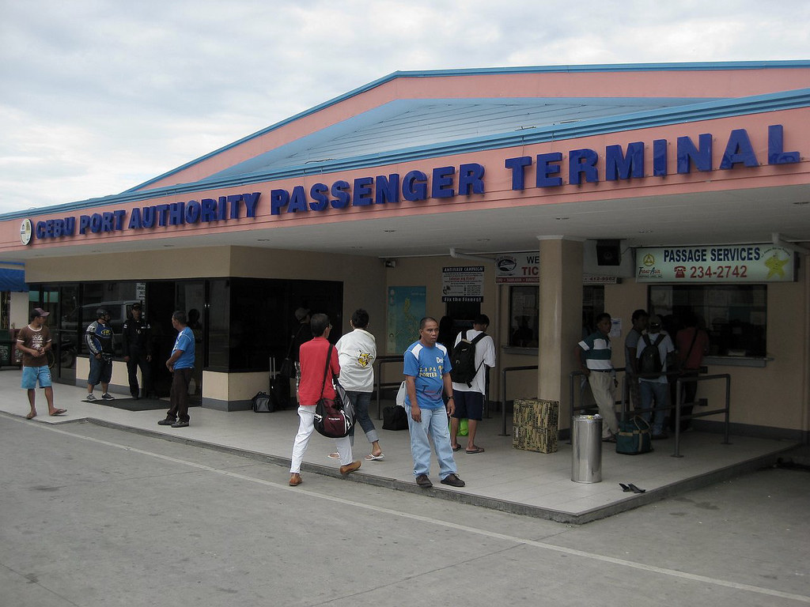
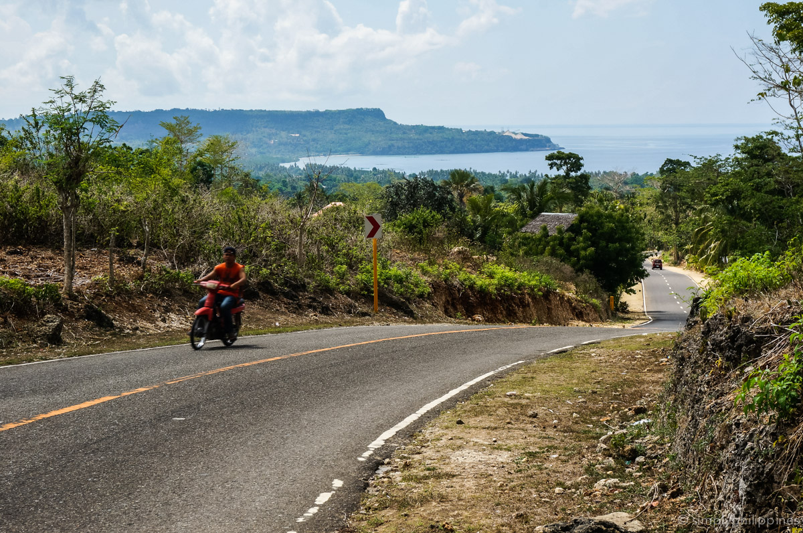

How to Get to Siquijor from NAIA
Follow these steps to reach Siquijor from Manila’s NAIA Airport.

Step 1: Fly from Manila
Book a flight from **NAIA (Manila)** to either **Dumaguete (DGT) or Cebu (CEB)**.
Airlines: Philippine Airlines, Cebu Pacific, AirAsia

Step 2: Ferry to Siquijor
From **Dumaguete Port**, take a ferry to **Siquijor Port**.
Ferry Operators: OceanJet, Montenegro Lines, Aleson Shipping

Alternative: Via Cebu
If landing in **Cebu**, take a ferry from **Cebu Port** to Siquijor via **Tagbilaran (Bohol)**.
Ferry Operators: OceanJet, Lite Shipping

Step 3: Getting Around Siquijor
Once in Siquijor, take a **tricycle, motorbike rental, or multicab** to your accommodation.
Tip: Pre-book transport with your resort for convenience.